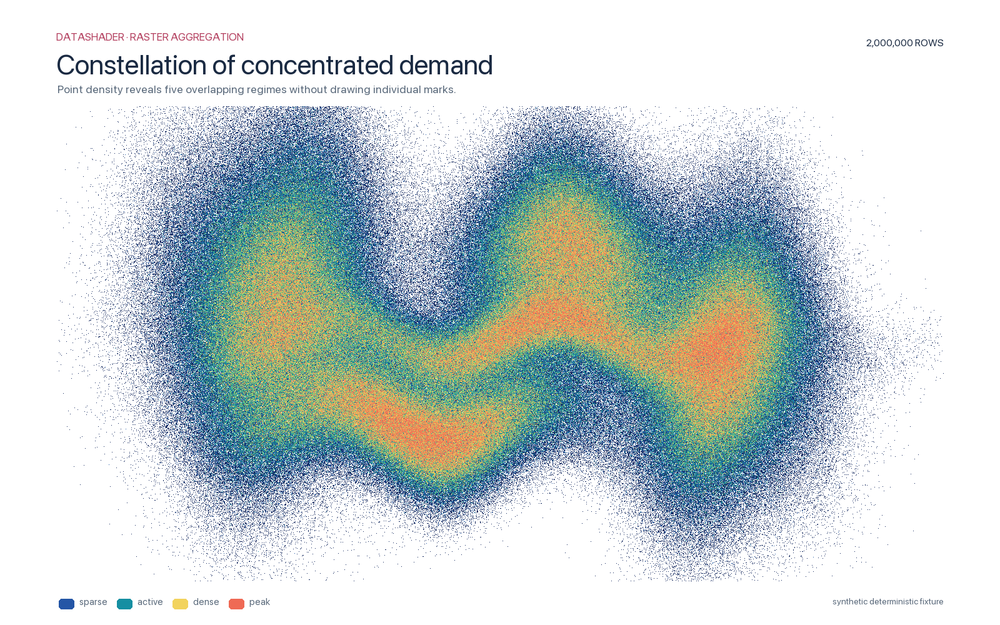

01 · point aggregation
Point density
Where do overlapping regimes concentrate?
src/datashader_demos/render.py
def _rare_outliers(rows: int) -> Image.Image:
rng = np.random.default_rng(99)
x = rng.normal(size=rows) * 2.2
y = 0.6 * x + rng.normal(size=rows) * 1.2
rare = rng.random(rows) < 0.004
y[rare] += rng.choice([-1, 1], rare.sum()) * (4 + rng.random(rare.sum()) * 2)
frame = pd.DataFrame(
{
"x": x,
"y": y,
"kind": pd.Categorical(
np.where(rare, "rare", "baseline"), categories=["baseline", "rare"]
),
}
)
canvas = ds.Canvas(
plot_width=PLOT_WIDTH, plot_height=PLOT_HEIGHT, x_range=(-8, 8), y_range=(-8, 8)
)
agg = canvas.points(frame, "x", "y", agg=ds.count_cat("kind"))
colors = {"baseline": "#54d6c6", "rare": "#ff6f91"}
raster = tf.shade(agg, color_key=colors, how="eq_hist", min_alpha=24)
raster = tf.spread(raster, px=2).to_pil()
return _decorate(
raster,
title="Rare-event outlier field",
subtitle=(
"A categorical aggregate preserves exceptional observations inside "
"a dense baseline cloud."
),
rows=rows,
legend=list(colors.items()),
)
DEMOS: dict[str, Demo] = {
"point-density": Demo(
"point-density",
"Constellation of concentrated demand",
"Large point aggregation",
2_000_000,
_point_density,
),
"trajectory-bundle": Demo(
"trajectory-bundle",
"Braided trajectories through a shared field",
"Path density aggregation",
500_000,
_trajectory_bundle,
),
"category-mix": Demo(
"category-mix",
"Categorical territories and their borderlands",
"Categorical point aggregation",
1_200_000,
_category_mix,
),
"phase-portrait": Demo(
"phase-portrait",
"Phase-space convergence atlas",
"Trajectory density",
420_000,
_phase_portrait,
),
"fractal-basin": Demo(
"fractal-basin",
"Newton fractal basins",
"Categorical iterative basin",
500_000,
_fractal_basin,
),
"parameter-sweep": Demo(
"parameter-sweep",
"Logistic-map parameter sweep",
"Dense bifurcation diagram",
650_000,
_parameter_sweep,
),
"event-raster": Demo(
"event-raster",
"Distributed event raster",
"Categorical event aggregation",
1_200_000,
_event_raster,
),
"uncertainty-fan": Demo(
"uncertainty-fan",
"Monte Carlo uncertainty fan",
"Ensemble line density",
480_000,
_uncertainty_fan,
),
"network-density": Demo(
"network-density",
"Edge-density network field",
"Connection density",
520_000,
_network_density,
),
"terrain-scan": Demo(
"terrain-scan",
"Streaming terrain scan",
"Mean scalar aggregation",
1_000_000,
_terrain_scan,
),
"geo-routes": Demo(
"geo-routes", "Global route convergence", "Route density", 580_000, _geo_routes
),
"rare-outliers": Demo(
"rare-outliers",
"Rare-event outlier field",
"Categorical anomaly density",
1_100_000,
_rare_outliers,
),
}